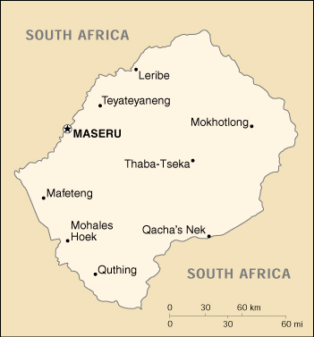

{kind=link}


| Lesotho |
|
|  | |
| Introduction |
Background: Basutoland was renamed the Kingdom of Lesotho upon independence from the UK in 1966. Constitutional government was restored in 1993 after 23 years of military rule.
| Geography |
Location: Southern Africa, an enclave of South Africa
Geographic coordinates: 29 30 S, 28 30 E
Map references: Africa
Area:
total:
30,355 sq km
land:
30,355 sq km
water:
0 sq km
Area - comparative: slightly smaller than Maryland
Land boundaries:
total:
909 km
border countries:
South Africa 909 km
Coastline: 0 km (landlocked)
Maritime claims: none (landlocked)
Climate: temperate; cool to cold, dry winters; hot, wet summers
Terrain: mostly highland with plateaus, hills, and mountains
Elevation extremes:
lowest point:
junction of the Orange and Makhaleng Rivers 1,400 m
highest point:
Thabana Ntlenyana 3,482 m
Natural resources: water, agricultural and grazing land, some diamonds and other minerals
Land use:
arable land:
11%
permanent crops:
0%
permanent pastures:
66%
forests and woodland:
0%
other:
23% (1993 est.)
Irrigated land: 30 sq km (1993 est.)
Natural hazards: periodic droughts
Environment - current issues: population pressure forcing settlement in marginal areas results in overgrazing, severe soil erosion, and soil exhaustion; desertification; Highlands Water Project controls, stores, and redirects water to South Africa
Environment - international agreements:
party to:
Biodiversity, Climate Change, Desertification, Marine Life Conservation, Ozone Layer Protection
signed, but not ratified:
Endangered Species, Law of the Sea, Marine Dumping
Geography - note: landlocked; surrounded by South Africa
| People |
Population:
2,143,141
note:
estimates for this country explicitly take into account the effects of excess mortality due to AIDS; this can result in lower life expectancy, higher infant mortality and death rates, lower population and growth rates, and changes in the distribution of population by age and sex than would otherwise be expected (July 2000 est.)
Age structure:
0-14 years:
40% (male 426,556; female 421,563)
15-64 years:
56% (male 575,580; female 619,280)
65 years and over:
4% (male 42,274; female 57,888) (2000 est.)
Population growth rate: 1.65% (2000 est.)
Birth rate: 31.74 births/1,000 population (2000 est.)
Death rate: 14.59 deaths/1,000 population (2000 est.)
Net migration rate: -0.64 migrant(s)/1,000 population (2000 est.)
Sex ratio:
at birth:
1.03 male(s)/female
under 15 years:
1.01 male(s)/female
15-64 years:
0.93 male(s)/female
65 years and over:
0.73 male(s)/female
total population:
0.95 male(s)/female (2000 est.)
Infant mortality rate: 82.97 deaths/1,000 live births (2000 est.)
Life expectancy at birth:
total population:
50.79 years
male:
49.78 years
female:
51.84 years (2000 est.)
Total fertility rate: 4.15 children born/woman (2000 est.)
Nationality:
noun:
Mosotho (singular), Basotho (plural)
adjective:
Basotho
Ethnic groups: Sotho 99.7%, Europeans, Asians, and other 0.3%,
Religions: Christian 80%, indigenous beliefs 20%
Languages: Sesotho (southern Sotho), English (official), Zulu, Xhosa
Literacy:
definition:
age 15 and over can read and write
total population:
71.3%
male:
81.1%
female:
62.3% (1995 est.)
| Government |
Country name:
conventional long form:
Kingdom of Lesotho
conventional short form:
Lesotho
former:
Basutoland
Data code: LT
Government type: parliamentary constitutional monarchy
Capital: Maseru
Administrative divisions: 10 districts; Berea, Butha-Buthe, Leribe, Mafeteng, Maseru, Mohales Hoek, Mokhotlong, Qacha's Nek, Quthing, Thaba-Tseka
Independence: 4 October 1966 (from UK)
National holiday: Independence Day, 4 October (1966)
Constitution: 2 April 1993
Legal system: based on English common law and Roman-Dutch law; judicial review of legislative acts in High Court and Court of Appeal; has not accepted compulsory ICJ jurisdiction
Suffrage: 18 years of age; universal
Executive branch:
chief of state:
King LETSIE III (since 7 February 1996); note - King LETSIE III formerly occupied the throne from November 1990 to February 1995, while his father was in exile
head of government:
Prime Minister Pakalitha MOSISILI (since 23 May 1998)
cabinet:
Cabinet
elections:
none; according to the constitution, the leader of the majority party in the assembly automatically becomes prime minister; the monarch is hereditary, but, under the terms of the constitution which came into effect after the March 1993 election, the monarch is a "living symbol of national unity" with no executive or legislative powers; under traditional law the college of chiefs has the power to determine who is next in the line of succession, who shall serve as regent in the event that the successor is not of mature age, and may even depose the monarch
Legislative branch:
bicameral Parliament consists of the Senate (33 members - 22 principal chiefs and 11 other members appointed by the ruling party) and the Assembly (80 seats; members elected by popular vote for five-year terms); note - number of seats in the Assembly rose from 65 to 80 in the May 1998 election
elections:
last held 23 May 1998 (next to be held in 2000; date to be determined by Interim Political Authority)
election results:
percent of vote by party - LCD 61%; seats by party - LCD 79, BNP 1
note:
results contested; opposition parties claimed the election was fraudulent and staged a coup; Southern African Development Community (SADC) forces intervened in September 1998 and restored order; the Interim Political Authority (IPA) was set up in December 1998 to create a new electoral system and conduct new elections within 18 months
Judicial branch: High Court, chief justice appointed by the monarch; Court of Appeal; Magistrate's Court; customary or traditional court
Political parties and leaders: Basotho National Party or BNP [Maj. Gen. Justine Metsing LEKHANYA]; Basotholand Congress Party or BCP [Molapo QHOBELA, leader (currently suspended), Ntsukunyane MPHANYA, secretary general]; Lesotho Congress for Democracy or LCD [Dr. Pakalitha MOSISILI, leader; Shakhane MOKHEHLE, secretary general] - the governing party; United Democratic Party or UDP [Charles MOFELI]; Marematlou Freedom Party or MFP and Setlamo Alliance [Vincent MALEBO]; National Progressive Party or NPP [Chief Peete Nkoebe PEETE]; Sefate Democratic Party or SDP [Bofihla NKUEBE]
International organization participation: ACP, AfDB, C, CCC, ECA, FAO, G-77, IBRD, ICAO, ICRM, IDA, IFAD, IFC, IFRCS, ILO, IMF, Intelsat (nonsignatory user), Interpol, IOC, ITU, NAM, OAU, OPCW, SACU, SADC, UN, UNCTAD, UNESCO, UNHCR, UNIDO, UPU, WCL, WFTU, WHO, WIPO, WMO, WToO, WTrO
Diplomatic representation in the US:
chief of mission:
Ambassador Lebohang Kenneth MOLEKO
chancery:
2511 Massachusetts Avenue NW, Washington, DC 20008
telephone:
[1] (202) 797-5533 through 5536
FAX:
[1] (202) 234-6815
Diplomatic representation from the US:
chief of mission:
Ambassador Katherine H. PETERSON
embassy:
254 Kingsway, Maseru West (Consular Section)
mailing address:
P. O. Box 333, Maseru 100, Lesotho
telephone:
[266] 312666
FAX:
[266] 310116
Flag description: divided diagonally from the lower hoist side corner; the upper half is white, bearing the brown silhouette of a large shield with crossed spear and club; the lower half is a diagonal blue band with a green triangle in the corner
| Economy |
Economy - overview: Small, landlocked, and mountainous, Lesotho's only important natural resource is water. Its economy is based on subsistence agriculture, livestock, and remittances from miners employed in South Africa. The number of such mine workers has declined steadily over the past several years. In 1996 their remittances added about 33% to GDP compared with the addition of roughly 67% in 1990. A small manufacturing base depends largely on farm products which support the milling, canning, leather, and jute industries. Agricultural products are exported primarily to South Africa. Proceeds from membership in a common customs union with South Africa form the majority of government revenue. Although drought has decreased agricultural activity over the past few years, completion of a major hydropower facility in January 1998 now permits the sale of water to South Africa, generating royalties that will be an important source of income for Lesotho. The pace of parastatal privatization has increased in recent years. Civil disorder in September 1998 destroyed 80% of the commercial infrastructure in Maseru and two other major towns. Most firms were not covered by insurance, and the rebuilding of small and medium business has been a significant challenge in terms of both economic growth and employment levels. Output dropped 10% in 1998 and recovered slowly in 1999.
GDP: purchasing power parity - $4.7 billion (1998 est.)
GDP - real growth rate: -10% (1998 est.)
GDP - per capita: purchasing power parity - $2,240 (1998 est.)
GDP - composition by sector:
agriculture:
14%
industry:
42%
services:
44% (1997 est.)
Population below poverty line: 49.2% (1993 est.)
Household income or consumption by percentage share:
lowest 10%:
0.9%
highest 10%:
43.4% (1986-87)
Inflation rate (consumer prices): 8% (1998 est.)
Labor force: 689,000 economically active
Labor force - by occupation: 86% of resident population engaged in subsistence agriculture; roughly 35% of the active male wage earners work in South Africa
Unemployment rate: substantial unemployment and underemployment affecting more than half of the labor force (1999 est.)
Budget:
revenues:
$507 million
expenditures:
$487 million, including capital expenditures of $170 million (FY96/97 est.)
Industries: food, beverages, textiles, handicrafts; construction; tourism
Industrial production growth rate: 19.7% (1995)
Electricity - production: 0 kWh (1998)
Electricity - production by source:
fossil fuel:
0%
hydro:
0%
nuclear:
0%
other:
0% (1998)
Electricity - consumption: 209 million kWh (1998)
Electricity - exports: 0 kWh (1998)
Electricity - imports: 209 million kWh (1998)
Agriculture - products: corn, wheat, pulses, sorghum, barley; livestock
Exports: $235 million (f.o.b., 1998 est.)
Exports - commodities: manufactures 75% (clothing, footwear, road vehicles), wool and mohair, food and live animals (1998)
Exports - partners: South African Customs Union 65%, North America 34% (1998)
Imports: $700 million (f.o.b., 1998 est.)
Imports - commodities: food; building materials, vehicles, machinery, medicines, petroleum products (1995)
Imports - partners: South African Customs Union 90%, Asia 7% (1997)
Debt - external: $675 million (1998 est.)
Economic aid - recipient: $123.7 million (1995)
Currency: 1 loti (L) = 100 lisente; note - maloti (M) is the plural form of loti
Exchange rates: maloti (M) per US$1 - 6.12439 (January 2000), 6.10948 (1999), 5.52828 (1998), 4.60796 (1997), 4.29935 (1996), 3.62709 (1995); note - the Basotho loti is at par with the South African rand
Fiscal year: 1 April - 31 March
| Communications |
Telephones - main lines in use: 18,000 (1995)
Telephones - mobile cellular: 0 (1995)
Telephone system:
rudimentary system
domestic:
consists of a few landlines, a small microwave radio relay system, and a minor radiotelephone communication system
international:
satellite earth station - 1 Intelsat (Atlantic Ocean)
Radio broadcast stations: AM 1, FM 2, shortwave 1 (1998)
Radios: 104,000 (1997)
Television broadcast stations: 1 (2000)
Televisions: 54,000 (1997)
Internet Service Providers (ISPs): 1 (1999)
| Transportation |
Railways:
total:
2.6 km; note - owned by, operated by, and included in the statistics of South Africa
narrow gauge:
2.6 km 1.067-m gauge (1995)
Highways:
total:
4,955 km
paved:
887 km
unpaved:
4,068 km (1996 est.)
Ports and harbors: none
Airports: 29 (1999 est.)
Airports - with paved runways:
total:
4
over 3,047 m:
1
914 to 1,523 m:
1
under 914 m:
2 (1999 est.)
Airports - with unpaved runways:
total:
25
914 to 1,523 m:
4
under 914 m:
21 (1999 est.)
| Military |
Military branches: Lesotho Defense Force (LDF; includes Army and Air Wing), Royal Lesotho Mounted Police (RLMP)
Military manpower - availability:
males age 15-49:
503,751 (2000 est.)
Military manpower - fit for military service:
males age 15-49:
271,098 (2000 est.)
Military expenditures - dollar figure: $NA
Military expenditures - percent of GDP: NA%
Military - note: The Lesotho Government in 1999 began an open debate on the future structure, size, and role of the armed forces, especially considering the Lesotho Defense Force's (LDF) history of intervening in political affairs.
| Transnational Issues |
Disputes - international: none